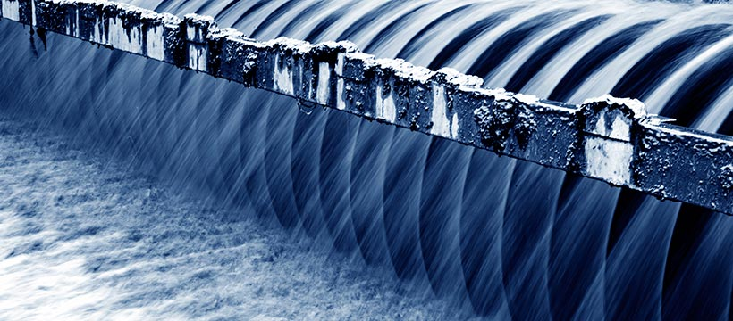

Detalhe de Curso
Logística
A graduação em Logística geralmente tem a duração média de dois anos e ao longo desses quatro semestres os alunos desenvolvem competências e habilidades para lidar com as demandas da área. Considerado um campo em expansão no país e com amplas oportunidades de emprego, a área também oferece aos profissionais salários atrativos.
Segurança no trabalho
Segurança no Trabalho é um conjunto de ciências, teorias e tecnologias que visam a proteção do trabalhador em seu local de ofício, promovendo a sua segurança contra acidentes e doenças ocupacionais. Neste curso, disponível em nível técnico e de graduação, o estudante irá aprender a como reduzir os riscos contra o trabalhador, garantindo a sua segurança, resultando em um melhor uso do tempo e em maior produtividade. Possuindo uma grande demanda no mercado de trabalho, o formado em Segurança do Trabalho será o responsável por elaborar os pareceres sobre a qualidade dos processos e condições do ambiente do trabalho. É ele que irá estabelecer os planos de ação para o controle de perdas e acompanhará as atividades e equipes de instalação, reparo, operação, montagem ou manutenção dos instrumentos do trabalhador.
Gestão financeira
O Brasil vive um momento onde cada vez mais pessoas apostam no empreendedorismo com a criação do próprio negócio seja ele de pequeno, médio ou grande porte. E para obter o equilíbrio financeiro, cada companhia precisa de, ao menos, um profissional responsável pela gestão financeira. Recentemente o Sebrae – Serviço Brasileiro de Apoio às Micro e Pequenas Empresas revelou dados mostrando que a maioria dos MEIS (microempreendedores individuais) ainda não sabe lidar com o processo de gerenciamento de uma empresa. Mas, para quem almeja um futuro de sucesso nos negócios é preciso qualificar-se, tendo como opção fazer um curso de Gestão Financeira Ficou interessado e deseja saber mais sobre a área? Confira aqui mais detalhes sobre a graduação e conte com o Educa Mais Brasil para encontrar outra opção de curso que mais combina com você.
Engenharia ambiental
Não é novidade para ninguém que o meio ambiente está sendo destruído em decorrência da atividade humana e da própria natureza. De acordo com um levantamento realizado por pesquisadores da Universidade de Queensland, na Austrália, a humanidade destruiu aproximadamente 10% de todas as áreas selvagens e meio ambiente do mundo. Por isso, as pessoas estão cada vez mais interessadas em assuntos voltados à destruição ambiental e as empresas passaram a investir em profissionais especializados na preservação do meio ambiente. Se você deseja atuar nessa área, talvez o curso de Engenharia Ambiental seja o mais adequado. A graduação de nível superior com titulação de bacharelado destina-se à formação de profissionais aptos para atuar com atividades que visam a manutenção do meio ambiente, como a administração do tratamento de esgoto, a distribuição de água, o descarte de lixo, o desenvolvimento de técnicas para prevenção do meio ambiente, além da avaliação dos impactos de obras, a elaboração de laudos técnicos e planejamentos energéticos.
Agronegócio
O Agronegócio é toda relação comercial e industrial que envolve a cadeia produtiva agrícola (agricultura) ou pecuária. O agronegócio no Brasil é um dos setores mais responsáveis pela retomada do crescimento econômico brasileiro que começou em 2017. Após dois anos de recessão, o Produto Interno Bruto (PIB) brasileiro cresceu 1% em 2017 e sem os números do Agronegócio, o crescimento estaria em torno de 0,3%. O curso de Agronegócio é uma graduação de nível superior oferecida com a titulação tecnológica. No mercado de trabalho, o tecnólogo atua em um campo semelhante ao do engenheiro agrícola, concentrando os esforços na melhoria da produção agrícola e pecuária. A diferença dos profissionais é que enquanto o tecnólogo em agronegócio atua na instalação, manutenção e operação do maquinário para otimizar a competitividade do negócio, o engenheiro é o profissional que projeta e desenvolve a tecnologia.
Ciências da natureza
A natureza, o universo e a vida. Esses são os três assuntos que norteiam a área deCiências da Natureza. Aqueles que são apaixonados por essa vertente do conhecimento e desejam atuar profissionalmente no ramo têm a possibilidade de ingressar em uma faculdade. A graduação em Ciências da Natureza (ou Ciências Naturais) é uma licenciatura, com duração média de quatro anos, que capacita os estudantes para que possam atuar com os ensinos fundamental e médio, ministrando aulas das áreas de meio ambiente e ciências, e realizar outras atividades relacionadas. Os apaixonados por Matemática, Física, Biologia e Química encontram no curso superior a chance de aprofundarem os seus conhecimentos nestas áreas, além de, é claro, aprenderem outros assuntos relacionados à docência e à educação em geral. Este é um ramo de grande importância (tanto que são cobradas na prova do ENEM - Exame Nacional do Ensino Médio questões de Ciências da Natureza e suas tecnologias), o que torna a formação ainda mais interessante.